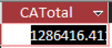
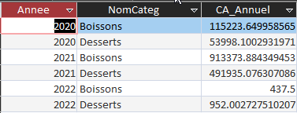
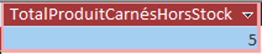
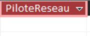

Dans une réflexion en lien avec l’origine de ses produits : On veut comme indicateur le CA total généré à ce jour avec les fournisseurs de l’UE ?
SELECT
SUM(
DT.Quantité * (Pr.CoutAchat * (1 - DT.[Remise (%)])) - Co.Port
) AS CATotal
FROM
(
(
(
Commande AS Co
INNER JOIN DetailCommande AS DT ON Co.[N° commande] = DT.[N° commande]
)
INNER JOIN Produit AS Pr ON DT.[Réf produit] = Pr.RefProd
)
INNER JOIN Fournisseur AS F ON Pr.NoFour = F.NoFour
)
INNER JOIN Pays AS P ON F.NoPays = P.NoPays
WHERE
P.UE = "Membre";

Dans une réflexion en lien avec la santé : On veut comme indicateur le chiffre d’affaires généré (montant total des ventes) annuel pour les catégories desserts ou boissons.
SELECT
Year(Commande.DateCde) AS Annee,
Categorie.NomCateg,
Sum(
DetailCommande.Quantité * Produit.CoutAchat * Categorie.CoefMarge * (1 - DetailCommande.[Remise (%)])
) AS CA_Annuel
FROM
(
(
Commande
INNER JOIN DetailCommande ON Commande.[N° commande] = DetailCommande.[N° commande]
)
INNER JOIN Produit ON DetailCommande.[Réf produit] = Produit.RefProd
)
INNER JOIN Categorie ON Produit.CodeCateg = Categorie.CodeCateg
WHERE
Categorie.NomCateg = "Desserts"
OR Categorie.NomCateg = "Boissons"
GROUP BY
Year(Commande.DateCde),
Categorie.NomCateg
ORDER BY
Year(Commande.DateCde),
Categorie.NomCateg;

Dans une réflexion en lien avec l’offre commerciale : Calcul de l’indicateur nombre de produits carnés non commandés actuellement ?
SELECT
COUNT(Pr.NomProd) AS TotalProduitCarnésHorsStock
FROM
Produit AS Pr
INNER JOIN Categorie AS C ON Pr.CodeCateg = C.CodeCateg
WHERE
C.NomCateg = "Viandes"
AND (
Pr.UnitStock = 0
OR Pr.UnitStock IS NULL
);

Dans une réflexion sur le partenariat client : A-t-on des clients pilotes d’un réseau partenaire ayant autant de commandes que les clients partenaires ?
SELECT P.CodeCli AS PiloteReseau,
FROM Clientele AS P
INNER JOIN Commande AS Co ON P.CodeCli = Co.CodeCli
WHERE P.CodeCli IN (
SELECT CodeCliPart
FROM Clientele
WHERE CodeCliPart IS NOT NULL
)
GROUP BY P.CodeCli
HAVING COUNT(*) = (
SELECT COUNT(*)
FROM Clientele AS CLTL INNER JOIN Commande AS Co2 ON CLTL.CodeCli = Co2.CodeCli
WHERE CLTL.CodeCliPart = P.CodeCl
GROUP BY CLTL.CodeCliPart;
);
